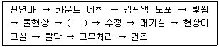
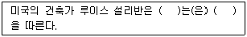
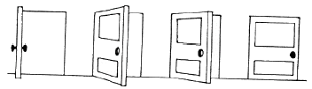
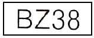
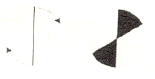
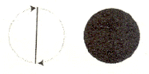
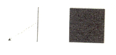
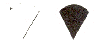
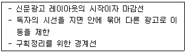

시각디자인산업기사 (2008-05-11 기출문제)
1과목: 색채학
1. 한국의 전통색인 오정색과 방위가 옳게 짝지어진 것은?
- 청색은 남쪽
- 적색은 동쪽
- 백색은 서쪽
- 황색은 북쪽
(정답률: 알수없음)

2. 프리즘으로 분광된 색광의 특징은?
- 굴절율은 장소에 따라 다르다.
- 더 이상 분광 되지 않는다.
- 파장과 색광은 서로 관련이 없다.
- 비가시광선에도 굴절된다.
(정답률: 알수없음)
3. Lab 색체계에 대한 설명으로 틀린 것은?
- a＊와 b＊ 모두 +값과 - 값을 가질 수 있다.
- a＊가 - 이면 파란색 계열이다.
- b＊가 + 이면 노란색 계열이다.
- L이 100 이면 흰색이다.
(정답률: 알수없음)
4. 문.스펜서의 조화론에 대한 설명으로 틀린 것은?
- 배색의 균형은 순응점에서의 거리라고 하는 척도로써 규정한다.
- 일반적으로 먼셀 표색계에 의한 설명이다.
- 감성적인 조화론을 과학적,정량적으로 취급한 특성이 있다.
- 부조화의 원인이 되는 애매한 요인 중 가장 주의하여야 하는 것이 채도차의 애매함이다.
(정답률: 알수없음)
5. 다음 중 유사색상 배색의 느낌이 아닌 것은?
- 화합적
- 평화적
- 안정적
- 자극적
(정답률: 알수없음)
6. 적색에 백색을 가하면 핑크색으로 변한다. 이때 핑크색은 어떻게 되었다고 할 수 있는가?
- 적색보다 명도는 높아졌고, 채도는 낮아졌다.
- 적색보다 명도, 채도 모두 높아졌다.
- 적색보다 명도는 낮아졌고, 채도는 높아졌다.
- 적색보다 명도, 채도 모두 낮아졌다.
(정답률: 알수없음)
7. 관용색명과 Munsell의 색기호를 대응시킨 것 중 잘못된 것은?
- 분홍(Pink) - 10RP 7/8
- 겨자색(mustard)- 3.5GY 7/6
- 하늘색(sky blue) - 7.5B 7/8
- 상아색(ivory) - 5Y 9/2
(정답률: 알수없음)
8. 제품색에 관한 설명으로 틀린 것은?
- 제품의 색이 난색계이면 실제보다 작게 보일 우려가 있다.
- 제품의 색은 브랜드 이미지를 형성하는데 중요한 역할을 한다.
- 제품에 대한 구매자의 선호도에는 제품에 따른 기능색과 유행색도 감안된다.
- 포장색이 저명도이면 열을 흡수해야 내부 제품의 부패와 손상을 촉진시킬 수도 있다.
(정답률: 알수없음)
9. 다음 중 노랑이 되는 RGB 코드는?
- (255, 0, 255)
- (255, 255, 255)
- (0, 255, 255)
- (255, 255, 0)
(정답률: 알수없음)
10. 배경이 검정일 경우 명시성이 가장 높은 색은?
- 노랑
- 빨강
- 파랑
- 자주
(정답률: 알수없음)
11. 오스트발트 표색계의 기본이 되는 색채가 아닌 것은?
- 모든 파장의 비치을 완전히 흡수하는 이상적인 흑색
- 모든 파장의 빛을 완전히 반사하는 이상적인 백색
- 모든 파장의 빛을 부분 흡수하는 이상적인 회색
- 완전색 또는 순색
(정답률: 알수없음)
12. 올림픽의 5색기가 상징하는 것이 잘못 연결된 것은?
- 아프리카 대륙 - 검정
- 아메리카 대륙 - 녹색
- 아시아 대륙 - 황색
- 유럽 - 청색
(정답률: 알수없음)
13. 다음 배색 중 가장 가벼운 느낌을 주는 것은?
- 주황 - 노랑
- 녹색 - 검정
- 빨강 - 파랑
- 청록 – 녹색
(정답률: 알수없음)
14. 색의 3 속성에 따라 3차원적인 공간에 색들을 계통적으로 배열한 것은?
- 색상환
- 채도척
- 명도척
- 색입체
(정답률: 알수없음)
15. 헤링은 "3대적인 반응 과정을 일으키는 수용체가 존재한다"고 가정하고, "적과녹, 황과청, 흑과 백은 각기쌍으로 되어있다"고 말한다. 이와 같은 두 색의 관계는?
- 색상
- 3원색설
- 계시대비
- 반대색
(정답률: 알수없음)
16. 빛의 감도에 있어서 명소시에서 암소시로 옮겨갈 때 물체색의 밝기 변화를 설명하는 시각현상은?
- 색각항상
- 푸르킨예 현상
- 착시현상
- 박명시현상
(정답률: 알수없음)
17. 다음 중 계통색명의 표시로 옳은 것은?
- 개나리색
- 황토색
- 선명한 연두
- 은회색
(정답률: 알수없음)
18. 컬러 이미지의 손상을 최소화하여 압축할 수 있는 포맷으로 24bit의 컬러를 모두 구현하면서도 비교적 용량이 적어 웹상에서 많이 활용되는 파일 형식은?
- JPEG 파일형식
- GIF 파일형식
- TIFF 파일형식
- BMP 파일형식
(정답률: 알수없음)
19. 명시도에 대한 설명으로 틀린 것은?
- 같은 거리에 같은 크기의 색이 있을 때 확실히 보이는 정도를 말한다.
- 교통 표지판 같은 것은 명시도가 높은 색을 필요로 한다.
- 배경과의 관계보다는 그 색 고유의 특성에 더 좌우된다.
- 명시도를 높이기 위해서는 명도 차를 크게 해야 한다.
(정답률: 알수없음)
20. 다음 가법혼색을 설명한 것 중 옳은 것은?
- Red 와 Blue를 혼색하면 Magenta가 된다.
- Yellow와 Cyan을 혼색하면 Green이 된다.
- 필터를 겹치면 겹칠수록 명도가 떨어진다.
- 컬러인쇄에 가법혼색의 원리가 사용된다.
(정답률: 알수없음)
2과목: 인쇄 및 사진기법
21. 인쇄판의 형식에 따른 인쇄방법의 종류에 해당되지 않는 것은?
- 볼록판 인쇄
- 윤전 인쇄
- 평판 인쇄
- 오목판 인쇄
(정답률: 알수없음)
22. 다음 용지 중 포장지로 가장 많이 사용되는 것은?
- 인디아지
- 크라프트지
- 킬레이트지
- 버라이트지
(정답률: 알수없음)
23. 피사계 심도를 결정하는 요인으로 가장 거리가 먼 것은?
- 조리개
- 초점거리
- 촬영거리
- 셔터속도
(정답률: 알수없음)
24. 고감도로서 일반 확대용 인화지에 사용되는 크로르브로 마이드지의 할로겐화은 유제로 가장 적합한 것은?
- AgF 과 Agcl
- AgI 과 AgCl
- AgBr 과 AgI
- AgBr 과 AgCl
(정답률: 알수없음)
25. 컬러 필름에 들어 있는 발색제의 색이 아닌 것은?
- Yellow
- Magenta
- Cyan
- Green
(정답률: 알수없음)
26. 셔터속도 1/125초, 조리개 f/11과 같은 노출을 하려면 셔터속도가 1/60초 일 때 가장 적합한 조리개 값은? (단, 다른 조건은 동일하다.)
- f/5.6
- f/8
- f/11
- f/16
(정답률: 알수없음)
27. 스튜디오 조명으로 부드러운 조명을 얻고자 할 때의 방법 중 가장 바람직하지 못한 것은?
- 소프트 박스를 사용한다.
- 트레싱지를 조명 앞에 씌워 사용한다.
- 반사판을 이용하여 간접조명을 사용한다.
- 조명의 광량을 낮춘다.
(정답률: 알수없음)
28. 인쇄는 화상(Image)을 가지고 중간물을 만들어 잉크를 매체로 하여 다량의 동일 화상을 복제하는 기술이다. 이 때 사용하는 중간물을 총칭하여 무엇이라고 하는가?
- 원고(copy)
- 판(plate)
- 인쇄기(printing press)
- 피인쇄체(paper)
(정답률: 알수없음)
29. 필름을 사용하지 않고 인화하는 방법으로 투명체, 반투명체, 불투명체 등의 물체를 인화지 위에 직접 올려놓고 인화하는 기법은?
- 포토그램
- 디포메이션
- 포토 몽타즈
- 더블 프린트
(정답률: 알수없음)
30. 컬러 필름에 대한 설명으로 틀린 것은?
- 컬러 리버설(Color Reversal) 필름은 피사체 원래의 색과 반대되는 색으로 현상처리 해주며 인화할 목적으로 사용한다.
- 컬러 리버설 필름은 외형발색 필름과 내형발색 필름이 있다.
- 컬러 필름은 3가지의 발색층으로 구성되어 있다.
- 컬러 네거티브 필름은 주로 인화지에 인화할 목적으로 사용한다.
(정답률: 알수없음)
31. 다음은 PVA 감광액의 평오목판 제판 공정이다. ( ) 안에 가장 적합한 공정은?

- 노출
- 양극산화처리
- PH 조정
- 부식
(정답률: 알수없음)
32. 다음 중 렌즈 표면에 코팅을 하는 주된 목적은?
- 렌즈표면의 반사율을 향상시키기 위하여
- 플레어나 고스트 이미지를 제거하기 위하여
- 렌즈의 구성매수를 축소시키기 위하여
- 화상의 콘트라스트를 저하시키기 위하여
(정답률: 알수없음)
33. 스크로보의 가이드 넘버(guide number)계산식으로 옳은 것은?
- 조리개 값 × ISO 값
- 조리개 값 × 셔터속도
- 조리개 값 × 촬영거리
- 조리개 값 × 렌즈의 구경
(정답률: 알수없음)
34. 다음 인쇄기계의 3형식 중 가장 오래된 방식은?
- 평압식
- 원압식
- 윤전식
- 유압식
(정답률: 알수없음)
35. 유리, 수면, 가구 등의 촬영시에 반사되는 빛을 억제하기 위해서 사용하는 필터로 가장 적장한 것은?
- Polarizing light filter
- Neutral density filter
- Haze filter
- Contrast filter
(정답률: 알수없음)
36. 다음 중 제책의 목적으로 가장 거리가 먼 것은?
- 페이지 순서를 올바르게 맞추기 위하여
- 잉크의 퇴색방지 및 인쇄물에 광택을 부여하기 위하여
- 읽는 사람에게 편리를 도모하기 위하여
- 기록이나 지식의 원천으로 영구 보존하기 위하여
(정답률: 알수없음)
37. 그라비어 인쇄 잉크의 가장 일반적인 건조형식은?
- 산화중합 건조형
- 침투 건조형
- 증발 건조형
- 냉각 건조형
(정답률: 알수없음)
38. 다음 중 감광재료의 수세 효과에 영향을 주는 요인으로 가장 거리가 먼 것은?
- 현상액의 종류
- 정착액의 종류
- 수세시간과 온도
- 수세수의 수질과 pH
(정답률: 알수없음)
39. 1813년경 니엡스는 아스팔트 감광액을 석판 대신 동판에 칠하여 빛쬠하고, 태르빈유와 바렌다유로 현상한 후 나타난 화상을 묽은 질산 수용액으로 부식시켜 지금의 사진 오목판 제판법을 개발하였다. 이것을 무엇이라고 하는가?
- 헬리오그래피
- 다게레오타이프
- 탈보타이프
- 홀로그래피
(정답률: 알수없음)
40. 다음 중 정착액 속에서 경막효과가 가장 강한 약품은?
- 칼륨명반
- 수산화칼슘
- 수산화나트륨
- 탄산나트륨
(정답률: 알수없음)
3과목: 시각디자인론
41. 아르누보 양식과 관련이 없는 사람은?
- 앙리 반 데 벨데
- 알퐁스 뮈샤
- 빅토르 오르타
- 엘 리시츠키
(정답률: 알수없음)
42. 축구 선수의 큰 줄무늬 운동복, 철길 건널목의 금지표시 등으로 설명할 수 있는 디자인 원리는?
- 동세
- 변화
- 대비
- 율동
(정답률: 알수없음)
43. 투시도법에 사용되는 부호 중 대각선 방향에 생기는 소점은?
- SP
- FL
- VP
- DVP
(정답률: 알수없음)
44. 미술공예운동(Art and Crafts Movement)의 설명으로 틀린 것은?(오류 신고가 접수된 문제입니다. 반드시 정답과 해설을 확인하시기 바랍니다.)
- 수공예를 중시하여 인간의 주체성을 정신문화로 끌어 올리는 역할을 하였다.
- 19세기 후반 영국의 윌리엄모리스(W. Morris)의 의해 주도 되었다.
- '레드하우스' 에서 제작된 제품은 저렴하여 대중을 위한 것이었다.
- 고딕양식을 모방하고 재현하려는 절충주의적 경향을 보였다.
(정답률: 알수없음)
45. 3소점으로 아래에서 위로 올려다 보이게 건물의 투시도를 그린 투시도법은?
- 조감 투시도
- 중심 투시도
- 성각 투시도
- 앙시 투시도
(정답률: 알수없음)
46. 디자인의 개념 및 정의에 대한 설명으로 적합하지 않은 것은?
- 사람이 갖고 있는 이미지의 실체화 과정이다.
- 디자인은 하나의 목적지향적인 문제해결 활동이다.
- 디자인은 사회적 욕구를 조형화하는 것으로 개인의 미의식은 전혀 반영하지 않는다.
- 디자인은 보다 사용하기 쉽고 안전하며, 아름답고, 쾌적한 생활환경을 창조하는 조형행위이다.
(정답률: 알수없음)
47. 초현실주의와 거리가 먼 설명은?
- 무의식의 세계를 표현하는 예술운동
- 1924년 앙드레브루통에 의해 초현실주의 선언문 발표
- 샤갈, 달리 등이 주요 작가
- 재래의 예술형식을 계승하여 철저히 분석하는 주의
(정답률: 알수없음)
48. 모더니즘 디자인 운동의 신념을 표현하는 다음 문장의 ( )안에 들어갈 옳은 단어의 조합은?

- 선 - 점
- 형태 - 기능
- 입체 - 평면
- 장식성 - 단순함
(정답률: 알수없음)
49. 정보화 시대의 디자인에서 주로 나타나는 현상이 아닌 것은?
- 사용자 참여적 디자인인 주문형 특성화
- 아날로그에서 디지털화
- 정보의 네트워크화
- 정보 소통의 획일화
(정답률: 알수없음)
50. 미국의 산업디자인이 발전하게 된 이유로 볼 수 없는 것은?
- 풍부한 자본력과 공업력이 밑바탕이 되었으므로
- 실용성을 중시하였기 때문에
- 바우하우스의 조형이념이 미국에서 꽃피워졌기 때문에
- 영국의 아카데미즘 영향을 크게 받았기 때문에
(정답률: 알수없음)
51. 다음 중 디자인의 기능과 역할이 아닌 것은?
- 디자인은 인간의 예술적, 실용적 욕구를 만족시킨다.
- 디자인은 직관적 기능을 갖는다.
- 디자인은 다각적인 효율성을 지닌다.
- 디자인은 윤리적 책임을 갖는다.
(정답률: 알수없음)
52. 선의 종류에 대한 특징 설명으로 틀린 것은?
- 직선은 분방함과 풍부한 감정을 나타낸다.
- 수직선은 고결, 희망을 나타내며 상승감, 긴장감을 준다.
- 수평선을 평화, 정지를 나타내고 안정감을 더해 준다.
- 포물선은 속도감을 준다.
(정답률: 알수없음)
53. CIP의 가장 중요한 목표는?
- 기업 생산성 확대를 위한 계획수립
- 기업의 이미지 통합화
- 기업광고의 극대화
- 기업의 판매정책 최대화 추구
(정답률: 알수없음)
54. 다음 그림을 통해 어떤 현상을 느낄 수 있는가?

- 크기의 항상
- 형의 항상
- 밝음의 항상
- 변화의 항상
(정답률: 알수없음)
55. 근대 디자인사의 연대별 순서가 옳게 된 것은?
- 미술공예운동 → 독일공작연 → 아르누보 → 바우하우스
- 독일공작연맹 → 아르누보 → 미술공예운동 → 바우하우스
- 미술공예운동 → 아르누보 → 독일공작연맹 → 바우하우스
- 독일공작연맹 → 미술공예운동 → 아르누보 → 바우하우스
(정답률: 알수없음)
56. 정보를 전달하기 위한 기능을 집약적으로 표현하는 분야는?
- 환경디자인
- 제품디자인
- 시각디자인
- 공예디자인
(정답률: 알수없음)
57. 아래 그림에서 8의 경우 상부의 '0'부분을 하단의 '0' 부분보다 작게 표현하는 이유는?

- 형태의 차별화
- 착시보정
- 원근감 처리
- 가독성 유지
(정답률: 알수없음)
58. 선의 변화로 만들어지는 모양의 면이 잘못 연결된 것은?




(정답률: 알수없음)
59. 광고에서 브랜드의 목적과 일치하며, 반복해서 사용하는 간결하면서도 힘이 있는 말이나 문장으로, 브랜드의 이미지와 디자인을 극대화 하기 위해 가장 소비자의 호기심을 유발시키는 역할을 하는 것은?
- 슬로건(slogan)
- 모티브(motive)
- 트레이드마크(trademark)
- 스토리텔링(story telling)
(정답률: 알수없음)
60. 대량생산을 위해서는 물건의 표준화(규격화)가 전제되어야 한다는 점을 일찍이 인식하고 1907년 독일에서 산업가, 건축가, 디자이너, 평론가들에 의해 조직된 단체는?
- 독일공작연맹
- 바우하우스
- 울름조형대학
- 유겐트 스틸
(정답률: 알수없음)
4과목: 시각디자인실무 이론
61. 신제품 개발의 중요성에 관한 설명 중 잘못된 것은?
- 기업체의 안정과 발전에 기여
- 자사의 기존제품의 경쟁
- 시장구조 변화에 대한 적응력 제공
- 제품의 수명주기 및 이익주기에 대한 대응
(정답률: 알수없음)
62. 다음 설명은 신문광고에서 어느 요소를 가리키는가?

- 헤드라인
- 보더라인
- 언더라인
- 디센더라인
(정답률: 알수없음)
63. 컴퓨터그래픽 작업시 데이터를 그 아래의 색과 섞이지 않고 원래의 색(대개 종이색 : 흰색)으로 인쇄하기 위해 뚫어내는 방법은?
- 블리드(Bleed)
- 녹아웃(Knock-out)
- 트리밍(trimming)
- 오버프린트(overprint)
(정답률: 알수없음)
64. 사용한 포장 용기를 다른 용도로 사용하게 되는 기능을 의미하는 것으로, 재사용 외에 재생까지의 의미가 확대되는 기능은?
- 전달성
- 유용성
- 재활용성
- 소구성
(정답률: 알수없음)
65. 교통광고의 특성이 아닌 것은?
- 도시의 확장으로 광고에 대한 접촉시간이 비교적 길다.
- 소구대상을 지역에 따라 세분화할 수 없기 때문에 상권에 알맞은 광고를 할 수가 없다.
- 하루에 수회 또는 출퇴근시 정기적 이용을 통하여 반복 소구할 수 있다.
- 지역에 따라 여러 가지 교통수단을 연결해서 편성할 수 있다.
(정답률: 알수없음)
66. 소비자 욕구를 만족시키기 위한 마케팅 믹스의 중요변수(4Ps)로만 이루어진 것은?
- 판매, 광고, 품질, 유인
- 포장, 상표, 재질, 크기
- 시장, 경쟁, 보관, 운송
- 제품, 가격, 유통구조, 판매촉진
(정답률: 알수없음)
67. 시지각에서의 항상성 현상이 아닌 것은?
- 크기의 항상성
- 동기의 항상성
- 형의 항상성
- 밝음의 항상성
(정답률: 알수없음)
68. 사회적 마케팅 개념(social marketing)의 실천적 예를 보여주는 것은?
- 마케팅 조사(marketing research)
- 그린 마케팅(green markiting)
- 마케팅 과학(marketing science)
- 시장개발전략(marketing development strategy)
(정답률: 알수없음)
69. 컬러 모드에 관한 설명으로 틀린 것은?
- RGB 모드 : 빛의 삼원색인 RGB의 혼합으로 모든 색을 표현하는 감산혼합 방식이다.
- CMYK 모드: 색료의 CMY에 검정색을 첨가한 색상 표현 방법이다.
- 비트맵 모드: 흰색과 검정색만으로 색상을 표현한다.
- 인덱스 컬러 모드 : 24비트 컬러 중에서 정해진 256색상의 컬러를 사용한다.
(정답률: 알수없음)
70. 편집디자인의 레이아웃에 관한 설명으로 옳은 것은?
- 레이아웃 형태는 프리 방식과 그리드 방식으로 나눌 수 있다.
- 레이아웃 형태는 그리드 방식과 모듈 방식으로 나눌 수 있다.
- 프리 방식은 모듈에 의한 구성과 그 구조에 의존하는 방식이다.
- 그리드 방식은 디자이너의 직관력에 의존한다.
(정답률: 알수없음)
71. 다음 타이포그래피의 요령 중 가장 옳은 것은?
- 행간 간격이 조밀할수록 읽기가 편하다.
- 굵은 문자체의 본문은 자체가 굵을수록 독자의 눈을 편하게 한다.
- 영문의 경우 전면적인 대문자의 사용은 독서속도를 증가시킨다.
- TV 타이포그래피의 경우 아주 굵거나 가는 문자체는 쓰지 않는 것이 좋다.
(정답률: 알수없음)
72. 시각 커뮤니케이션 디자인(Visual communication design) 응용에 관한 설명 중 틀린 것은?
- 감성 공학 디자인은 인간의 교육수준, 경험, 민족성, 문화적 배경까지 고려하여 개발을 한다.
- 유저 인터페이스(user interface)는 컴퓨터와 인간상호작용의 접촉영역을 말한다.
- 테크니컬 일러스트레이션(technical illustration)은 유머, 풍자 등으 효과를 더욱 살린 그림이다.
- 빛의 간섭을 이용한 사진법을 홀로그래피 또는 홀로그램이라 부른다.
(정답률: 알수없음)
73. C.I의 기본편에 해당하는 것을 옳게 나열한 것은?
- 심볼마크, 로고타입, 전용색상, 캐릭터, 시그니처 유니폼, 표지 및 간판
- 심볼마크, 로고타입, 전용색상, 전용서체, 캐릭터 마크코트, 시그니처
- 심볼마크, 로고타입, 전용색상, 전용서체, 캐릭터, 시그니처, 간판, 서류식
- 심볼마크, 로고타입, 전용색상, 캐릭터, 마스코트 유니폼, 간판, 서류식
(정답률: 알수없음)
74. 인쇄에서 무아래(Morire)현상이란?
- 화면의 밝은 부분에서 어두운 부분까지 망점단계가 연속되는 현상
- 인쇄물을 입체적으로 보이게 하는 특수인쇄 때 생기는 현상
- 인쇄한 잉크부분이 튀어나오도록 하는 인쇄기법의 일종
- 점 또는 선이 규칙적으로 분포된 것이 겹쳤을 때 생기는 반문 현상
(정답률: 알수없음)
75. 소비자의 관심, 태도, 요구들을 파악하기 위한 조사 방법 중 한 쌍의 대조적인 형용사를 선분의 양 끝에 설정, 몇 개의 점으로 나눠 이들 관련된 개념을 의미공간에 관련 시켜보는 조사기법은?
- AIO법
- 의미론적 차별법(semantic differential)
- 사이코 그래픽스(psychographics)
- 다차원적 척도법(multi-dimensional scaling)
(정답률: 알수없음)
76. 편집디자인에서 마진(margin)이란?
- 경제적인 디자인으로 생겨지는 이익의 폭
- 항목과 항복 사이에 들어가는 간지의 여백
- 문자나 그림이 들어간 부분 이외의 여백
- 맨 뒷면 표지에 들어가는 광고 지면
(정답률: 알수없음)
77. 디자인 매니지먼트의 실천과정에서 자발적이며 적극적인 의욕을 가지도록 일의 성취감과 이에 대한 보상, 자기능력의 신장 등을 고취토록 하는 단계는?
- 계획화
- 조직화
- 동기화
- 통제화
(정답률: 알수없음)
78. C.I.개념에 입각하여 통일성을 갖고 이루어지는 기업들의 독자적 행동을 뜻하는 것은?
- Mind Identity
- Visual Identity
- Bahavior Identity
- Web Identity
(정답률: 알수없음)
79. 신문의 종류 중 경제지, 스포츠지, 영자지 등으로 구분하는 것은 어느 기준에 따른 분류인가?
- 발행주기
- 지면의 크기
- 독자의 성격
- 비포 시장
(정답률: 알수없음)
80. 자유로운 토론 과정을 거쳐 제안하는 방법으로, 상대방의 의견에 대한 거부나 비판을 금지하는 아이디어 발상법은?
- 고든법
- 체크리스트법
- 속성열거법
- 브레인스토밍법
(정답률: 알수없음)